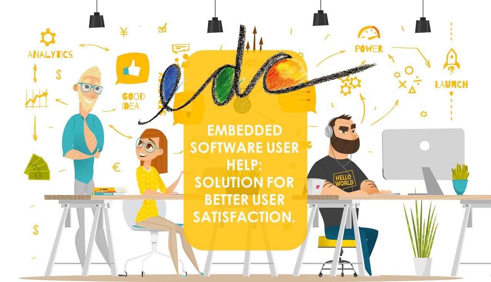

edc vous aide à créer de l'aide contextualisée embarquée dans votre logiciel.
edc est un logiciel fonctionnant en mode SAAS.
Il est conçu pour aider les développeurs, les rédacteurs techniques et les managers à meiux collaborer pour produire et livrer du contenu et du support aux utilisateurs de leurs outils.
Avec edc :
- Créer une aide utilisateur
contextuelle dans votre
logiciel - Structurer & hiérarchiser
votre contenu - Faire collaborer
développeur,
rédacteur & manager - Synchroniser développement
& rédaction.
Visionner notre vidéo de présentation :
 |
Let me introduce myself! |